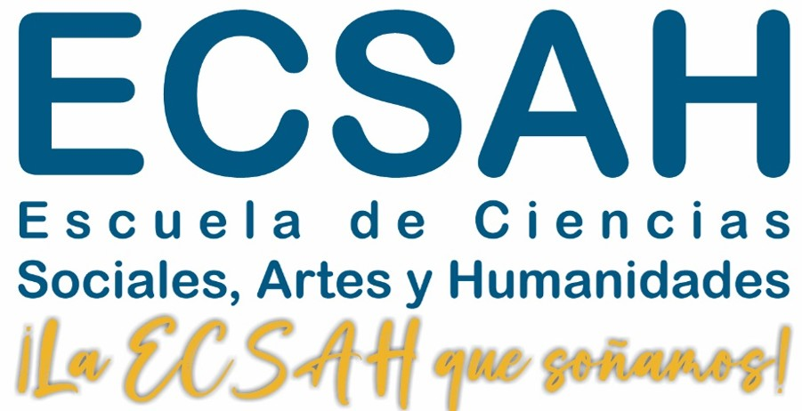

Información académica y administrativa – Zona Caribe
Encuentra aquí toda la información para resolver tus dudas sobre matrícula, opciones de grado, prácticas profesionales, cambios de malla y más. Si no encuentras lo que buscas, usa el buscador o contacta a tu líder de programa.
Esta sección es exclusiva para docentes de la ECSAH Zona Caribe.